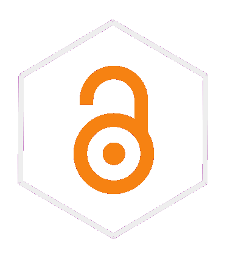

Ciencia Social Abierta
Sesión 3: Escritura y citas en texto plano
Juan Carlos Castillo & Tomás Urzúa
Sociología FACSO UChile
Primer Semestre 2026
1. Resumen sesión anterior
2. Escritura en texto plano
3. Citas en texto plano

1. Resumen sesión anterior
2. Escritura en texto plano
3. Citas en texto plano
Inspiración


Mayores detalles en la Práctica de Markdown en el sitio web del curso
Bibtex (.bib)

formato de almacenamiento de citas en texto plano (no es un programa)
Un archivo Bibtex tiene extensión .bib, donde deben estar almacenadas todas las referencias citadas en el texto
Software de gestión de referencias

los software de gestión de referencias bibliográficas permiten almacenar, organizar y luego utilizar las referencias
diferentes alternativas: Endnote, Mendeley, Refworks, Zotero
Zotero: libre y de código abierto
Zotero: vista general

Zotero: almacenamiento
- vía conector del navegador: cuando hay una referencia presente en la página, ir al botón del conector y se guarda (Zotero debe estar abierto)
la referencia se almacena en la carpeta que está activa en Zotero

Zotero: almacenamiento
- Vía identificador DOI / ISBN / ISSN

Zotero-Bibtex: exportación manual

Carpeta -> boton derecho -> export -> formato Bibtex
guardar archivo .bib en carpeta del proyecto
Ciencia Social Abierta
Juan Carlos Castillo & Tomás Urzúa
Sociología FACSO UChile
Primer Semestre 2026